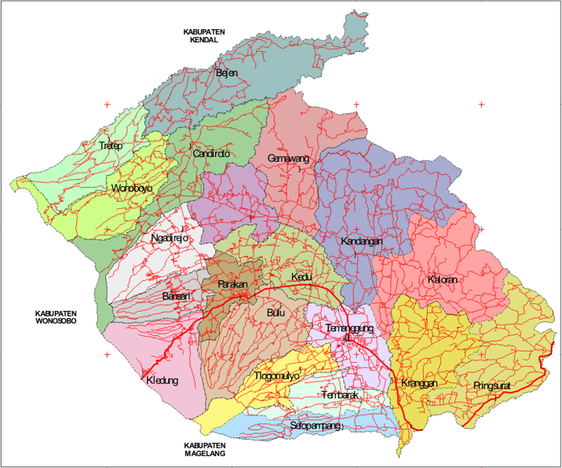
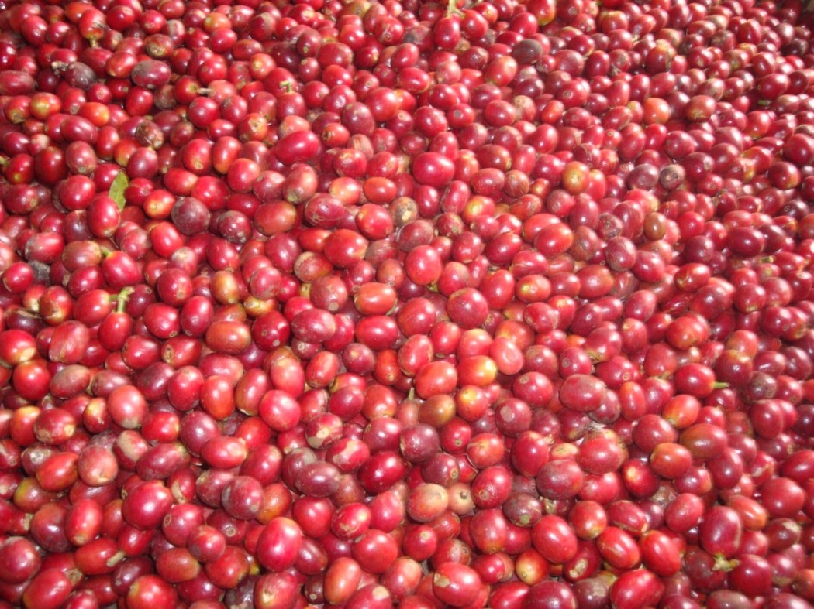
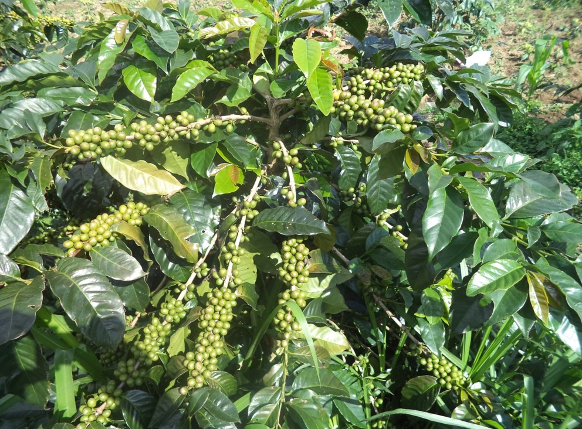
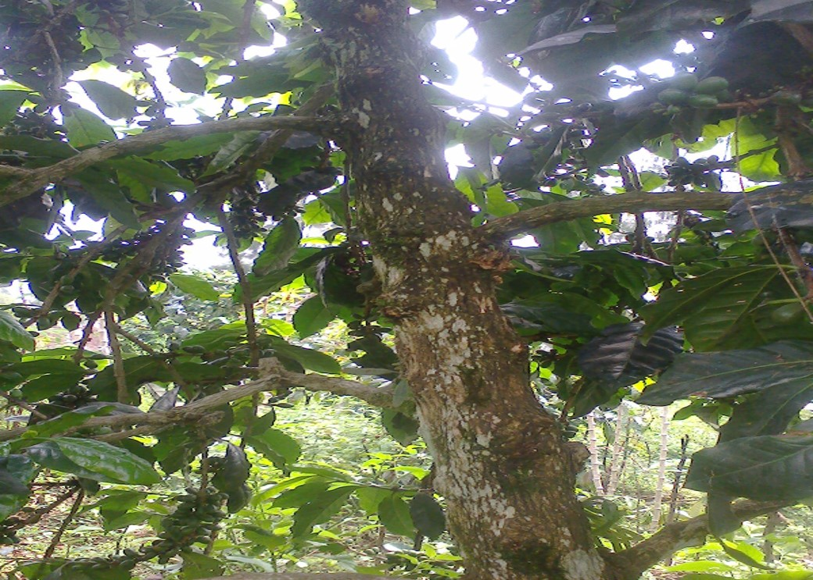

| BUDIDAYA KOPI | ||
| Kopi Arabika ( Coffea arabica ) dimasukkan oleh VOC ke Indonesia Th. 1696 Terkena serangan penyakit karat ( Hemillia vastatrik pada Thn 1896 sehinnga hanya bertahan pada lahan ≥ 700 mdpl Tahun 1900 kopi Robusta dimasukkan ke Indonesia ( kopi ini tahan thd penyakit karat daun, syarat tumbuh&pemeliharaan ringan, produksi tinggi ) dapat berkembang hingga 90 % luas kopi Indonesia. Kopi Arabika (Coffea arabica) merupakan salah satu tanaman perkebunan yang menjadi produk ekspor unggulan di Indonesia. Harga kopi arabika lebih mahal dibandingkan dengan kopi robusta karena adanya cita rasa khas. Untuk kualitas ekspor saat ini harga kopi arabika berkisar antara US$ 3-4 per kg sedangkan kopi robusta US$ 1.4-2 per Kg | ||
| SEJARAH KOPI ARABIKA DI KABUPATEN TEMANGGUNG DI KAWASAN SINDORO SUMBING
Kopi merupakan komoditas perkebunan yang memegang peranan penting dalam perekonomian Indonesia. Diestimasikan tidak kurang dari 1,84 juta keluarga yang pendapatan utamanya tergantung pada komoditas kopi. Selain itu lebih kurang 1 juta keluarga mengandalkan pendapatannya dari industri hilir kopi, posisi tersebut menunjukan bahwa peranan petani kopi dalam perekonomian nasional cukup signifikan. Disisi lain eksport komoditas kopi mampu menghasilkan devisa Negara, karena itu perlu mendapat perhatian, total luas areal kopi arabika di Indonesia mencapai 101.331 Ha dengan tingkat produktivitas rata-rata 600 kg/ha, sedangkan luas areal kopi arabika di Kabupaten Temanggung mencapai 1.429,48 Ha dengan rincian tanaman belum menghasilkan (TBM) 372,59 Ha, tanaman menghasilkan 1.048,57 Ha, tanaman tua/rusak (TT/TR) 8,32 Ha, dengan jumlah petani 8.559 orang, total produksi 991,63 Kg, dengan produktivitas/rata-rata produksi 945,70 Kg ose/Ha/Thn (data sampai dengan November 2012). Adapun potensi areal kopi arabika di Kabupaten Temanggung tersebar di 10 Kecamatan, meliputi : Kecamatan Parakan seluas 38,75 Ha, Kecamatan Bulu seluas 170,86 Ha, Kecamatan Tembarak seluas 20,00 Ha, Kecamatan Kaloran seluas 9,00 Ha, Kecamatan Ngadirejo seluas 81,70 Ha, Kecamatan Candiroto seluas 96,93 Ha, Kecamatan Tretep seluas 293,00 Ha, Kecamatan Kledung seluas 578,09 Ha, Kecamatan Bansari seluas 40,45 Ha, Kecamatan Tlogomulyo seluas 5,00 Ha, Kecamatan Selopampang seluas 49,00 Ha, Kecamatan Wonoboyo seluas 46,70 Ha, prosentase tanaman menghasilkan + 73 % (tanaman berproduksi). Perkembangan kopi arabika di Kabupaten Temanggung, di awali oleh tinggalan petani pendahulu (nenek moyang) sebagai tanaman penguat teras atau tanaman konservasi juga sebagai tanaman diversifikasi disamping tanaman tembakau yang merupakan tanaman utama dan unggulan, adapun rintisan perkembangannya dari tahun ke tahun adalah 1) Pada tahun 1990/1991, pengembangannya dengan melaksanakan pembibitan kopi arabika di Kebun Induk Dinas Perkebunan seluas 1,50 Ha dengan kloon/varietas dari USDA (United Statement Development Agricultur), Lini S 795; 2) Pada tahun 1991/1992, pengembangan dan penanaman kopi arabika pertama di Kecamatan Tretep dan Kecamatan Wonoboyo kegiatan P2WK (Proyek Pengembangan Wilayah Khusus) oleh Dinas Perkebunan Provinsi Jawa Tengah, seluas 100 Ha, varietas Lini S 795; 3) Pada tahun 1997 s/d 1999, selama 3 (tiga) tahun pengembangan dan penanaman kopi arabika varietas Kartika 1 dan Kartika 2 (disebut juga Kate 1 dan Kate 2) dilaksanakan di beberapa wilayah kecamatan dan desa se Kabupaten Temanggung; 4) Pada tahun 2000 s/d 2001, melalui Anggaran APBD II Kabupaten Temanggung ditanam 1.000.000 batang bibit kopi arabika di daerah potensi pengembangan dan penanaman untuk desa-desa atau kecamatan-kecamatan Wilayah Kabupaten Temanggung dengan varietas kartika 1 dan kartika 2 (Arabika Kate); 5) Pada tahun 2000 s/d 2003, pengembangan dan penanaman kopi arabika dilaksanakan kegiatan PMUP (Pengembangan Model Usaha Tani Partisipatif) Desa Tlahab dan sekitarnya di Kecamatan Kledung; 6) Pada tahun 2008/2009, petani dan kelompok tani bekerjasama dengan pihak ketiga dalam hal ini PT Perhutani melaksanakan pengembangan dan penanaman kopi arabika potensi wilayah binaan Perhutani; 7) Pada tahun 2009, di Desa Tlahab Kecamatan Kledung, Kelompok Tani mendapat bantuan benih kopi arabika sejumlah 160 Kg dari CV Satria Semarang, bermitra untuk mengembangkan benih tersebut menjadi bibit kopi arabika siap salur sejumlah 20 – 30 ribu batang; 8) Pada tahun 2011, pengembangan dan penanaman bibit kopi arabika sumber dana APBD I Provinsi Jawa Tengah oleh Dinas Perkebunan sejumlah 8.000 batang untuk Kelompok Tani di Desa Jambu Kecamatan Kledung; dan 9) Pada Tahun 2012, pengembangan dan penanaman bibit kopi arabika sumber dana APBD I Provinsi Jawa Tengah oleh Dinas Perkebunan di alokasikan untuk Desa Katekan Kecamatan Ngadirejo sejumlah 6.000 batang, Desa Mranggen Kecamatan Bansari sejumlah 3.000 batang, Desa Tuksari Kecamatan Kledung sejumlah 600 batang, jumlah keseluruhan 9.600 batang. Pelaksanaan pembangunan perkebunan di Kabupaten Temanggung harus memperhatikan kelestarian ekosistem dan memberdayakan masyarakat sekitar, sehingga tidak akan mengakibatkan terjadinya degradasi lahan maupun permasalahan sosial yang lain, karena pada dasarnya program pembangunan pertanian berkelanjutan (berwawasan lingkungan) berawal dari permasalahan pokok tentang bagaimana mengelola sumberdaya alam secara bijaksana, sehingga bisa menopang kehidupan yang berkelanjutan, bagi peningkatan kualitas hidup masyarakat dari generasi ke generasi. (LRA/Stl.Bppd) |
||
| Persyaratan Tumbuh Kopi Arabika
1. Iklim Pada kopi jenis Arabika, suhu tempat yang dibutuhkan agar tanaman dapat tumbuh yaitu berkisar antara 15-24°C. Sedangkan curah hujan yang dibutuhkan agar tanaman kopi Arabika dapat tumbuh berkisar 2000-4000 mm per tahun yang ini berarti lebih banyak dari kopi Robusta. Dengan curah hujan yang tinggi, bulan kering yang dibutuhkan untuk kopi Arabika tumbuh sama dengan kopi Robusta, yaitu 1-3 bulan kering. 2. Media tanam Pada kopi jenis Arabika, persyaratan kedalaman masih sama dengan kopi Robusta, yaitu ditanam dengan kedalaman lebih besar dari 100 cm. Unsur hara menjadi salah satu hal penting yang harus dimiliki tanah apabila akan ditanami tanaman kopi baik jenis Robusta maupun Arabika, sehingga tanah harus memiliki unsur hara yang cukup sebelum ditanami tanaman kopi. Sedangkan keasaman tanah yang sesuai untuk tanaman kopi jenis Arabika yaitu berkisar antara 5,3-6,0. 3. Ketinggian tempat Pada kopi jenis Arabika, tanaman ini dapat tumbuh apabila ditanam pada tempat dengan ketinggian 700-1400 mdpl. |
Tempat Budidaya Kopi Arabika
 |
|
|  |  |  |